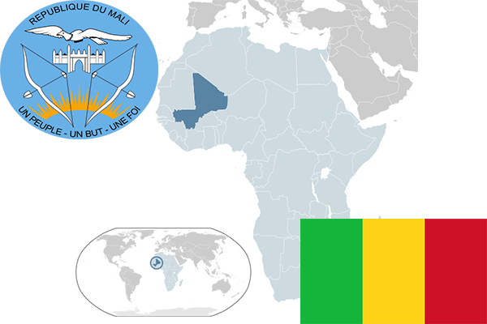

To`liq nomi: Mali Respublikasi
Region: G`arbiy Afrika
Qonunchilik shakli: Respublika
Poytaxt: Bamako
Maydoni: 1 240 192 km² (dunyoda 24 -o`rinda )
Chegaradosh davlatlari: Jazoir, Mavritaniya, Niger, Burkina Faso, Gvineya, Senegal
Aholisi: 15 968 882 (dunyoda 66 - o`rinda, 2013 -yil roʻyxat)
Aholi zichligi: 11,71/km²
Aholining o`rtacha yoshi: 49,55 yil (51,5 ayollar, 47,6 erkaklar)
Rasmiy tili: Fransuz tili
Dini: 65%-Islom, 1%-xristian va mahalliy dinlar
Pul birligi: Frank
Telefon prefiksi: +223
Internet domen: .ml
Xalqaro tashkilotlarga a`zoligi: BMT (1960 – yildan)
Dengiz va okeanlarga chiqishi: Yo`q